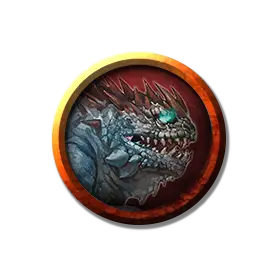

Детёныш василиска
Infant Basilisk
Крошечный Монстр, без мировоззрения

Класс Доспеха 11 (природный доспех)
Хиты 4 (1к4 + 2)
Скорость 10 футов
| мод | спас | ||
|---|---|---|---|
| СИЛ | 10 | +0 | +0 |
| ЛОВ | 8 | −1 | −1 |
| ТЕЛ | 15 | +2 | +2 |
| мод | спас | ||
|---|---|---|---|
| ИНТ | 2 | −4 | −4 |
| МДР | 8 | −1 | −1 |
| ХАР | 7 | −2 | −2 |
Чувства тёмное зрение 60 футов, пассивное Восприятие 9
Опасность 0
Бонус мастерства +2
Действия
Укус. Рукопашная атака оружием: +2 к попаданию, досягаемость 5 футов, одна цель. Попадание: Колющий урон 1 плюс урон ядом 1.
Описание
«НИКТО НЕ БУДЕТ ВЫСЕКАТЬ СТАТУЮ ИСПУГАННОГО ВОИНА. ЕСЛИ УВИДЕЛИ ТАКУЮ, ДЕРЖИТЕ ГЛАЗА ЗАКРЫТЫМИ, А УХО ВОСТРО»
— ЧЕТВЕРТОЕ ПРАВИЛО ВЫЖИВАНИЯ В ПОДЗЕМЕЛЬЯХ МИСТИКА Х
Путешественники иногда натыкаются в диких местах на объекты, которые выглядят как куски удивительно реалистичной резьбы по камню. Недостающие куски кажутся откушенными. Бывалые путешественники считают такие реликвии предупреждением о том, что где-то рядом находится василиск.
Адаптирующийся хищник. Василискам комфортно в засушливом, умеренном или тропическом климате. Его логово располагается в пещере или другом защищенном месте. Однако чаще василисков встречают под землей.
Василиски, родившиеся и выращенные в неволе, могут быть одомашнены и обучены. Обученный василиск знает, как избегать взгляда с теми, кого хозяин хочет защитить, что делает его опасным охранником. Именно из-за этого яйца василиска высоко ценятся.
Каменный взгляд. Василиски слишком тяжеловесные для охоты, но им и не нужно преследовать добычу. Взгляда василиска может быть достаточно, чтобы быстро превратить жертву в пористый камень, а сильные челюсти василиска способны крошить камень. А уже в пищеводе камень снова принимает органическую форму.
Некоторые алхимики утверждают, что знают, как обработать пищевод василиска и жидкости, находящиеся в нем. Из обработанного должным образом пищевода можно выделить масло, которое будет обращать окаменение. К сожалению, если жертва потеряла какую-либо часть своего тела, пока находилась в каменном виде, при оживлении она не восстановится. Если в каменном виде существо потеряло жизненно важный орган, например, голову, вернуть существо в первоначальное состояние при помощи этого масла будет невозможно.